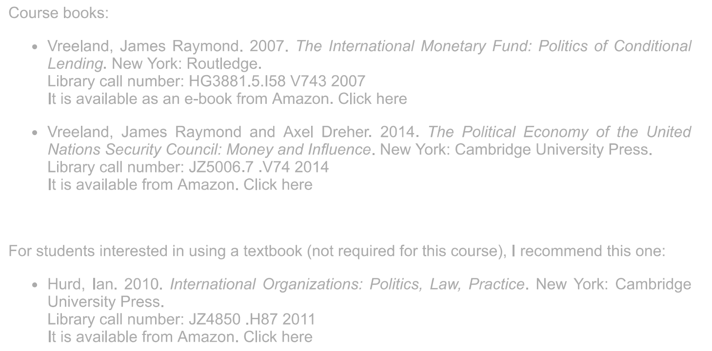

分别对本科生和博士生开设international organizations这门课程，课程大纲在附件中发送。博士生课程没有专门指定的教科书，每讲的阅读材料在大纲中列出 其中本科生IO课程指定三本教科书，分别是:

没有专门的国际组织的课程，相关课程多为法学院开设，以国际公法、全球治理为主，有专门的WTO相关课程
其中国际公法这门课程在my.harvard网站上列出了指定教科书:

三门相关课程分别为：国际治理与国际组织（2017年暑校）、20世纪国际组织的发展（2019年春季）和国际合作（2021年春季），其中只有国际合作这门课程指定了教科书，为Axelrod所著的Evolution of Cooperation；三门课程的简要介绍随件发送